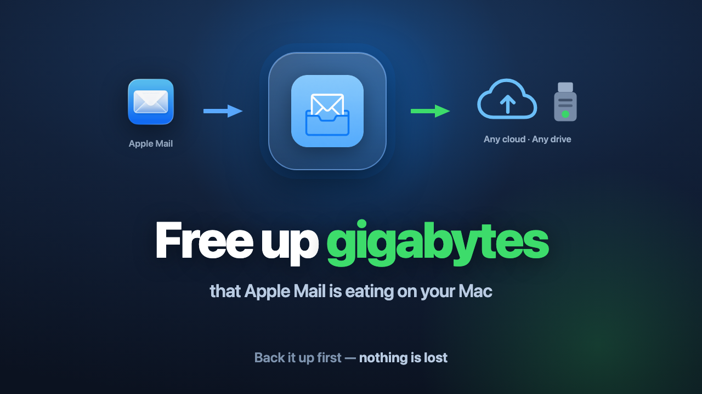

Years of messages and attachments pile up locally. Back them up to any cloud folder or USB drive, then delete them in Mail to reclaim the space. Nothing is lost — every archived email stays browsable and searchable right here in the app.

Three steps. Your mail is copied out before anything is cleared.
See exactly how much space Apple Mail takes on this Mac, broken down per mailbox and per year.
Copy old mail — with attachments — to any folder you choose: iCloud Drive, OneDrive, Dropbox, Google Drive, an external SSD or a USB stick.
Once every copy is verified, clear the originals in Mail and get the disk space back.
Byte-exact copies you can open in Apple Mail, Thunderbird or any mail client. No proprietary database, no lock-in, ever.
Browse and full-text search your entire archive instantly — sender, subject, body and attachments.
Search keeps working when the drive is unplugged or you have no internet. The index lives on your Mac.
Any cloud folder that syncs to your Mac — iCloud, OneDrive, Dropbox, Google Drive and others — or any external drive. Multiple locations merge into one searchable library.
Nothing is stripped or recompressed. The archived message is exactly what arrived in your inbox.
Replies and forwards fold into threads, so a long exchange reads as one conversation — just like Mail.
This app touches your mail archive. It is designed so a mistake can’t cost you an email.
The app only reads your mail and writes copies elsewhere. It never edits or deletes anything inside Mail.
After writing, each file is re-read from disk and byte-checked — a silent write failure can never pass as a backup.
Nothing is marked “safe to remove” unless it is genuinely backed up — including messages still on the server that were never downloaded.
No account, no server, no telemetry. Your mail never leaves your Mac except to the drive you choose.
No. The app copies messages out first and verifies every file byte by byte. Clearing the originals in Mail is a separate, explicit step you take yourself.
Yes. Browse and search everything inside the app, or open any archived message as a standard .eml file in Apple Mail or any other client.
macOS protects Apple Mail’s data folder. Without that permission no app can read your mail. You grant it once in System Settings — the app never sends anything anywhere.
Just download and open the app — the 7-day trial starts automatically, with every feature unlocked. No account, no payment, nothing to enter. When the trial ends, buy a license to keep using it; your archived mail stays readable regardless.
No. One-time purchase, no recurring fee. The license is verified locally, so it keeps working offline and never expires.